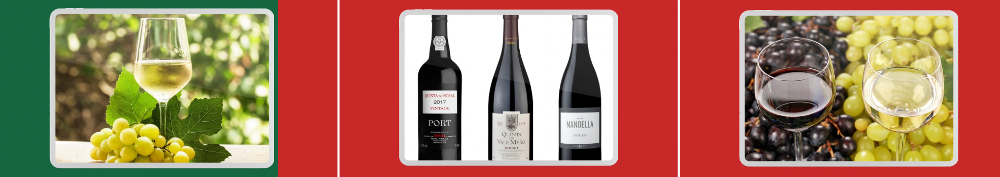

História e Origem do Vinho de Portugal
A relação de Portugal com o vinho é ancestral. Antes mesmo de existir “Portugal”, povos como fenícios, gregos e cartagineses já navegavam pela costa atlântica e traziam videiras e técnicas de vinificação para as tribos locais. Mas foi com os romanos, por volta do século II a.C., que o cultivo da uva se espalhou de fato. Eles já enxergavam o vinho como alimento, remédio e até símbolo de civilização.
As vinhas cobriam o território que hoje corresponde às regiões do Douro, Tejo e Alentejo, e os romanos deixaram marcas: lagares escavados na pedra, ânforas, e práticas de fermentação que ecoam até hoje.
Monges, Mosteiros e a Sobrevivência do Sabor
Com a queda do Império Romano, a produção de vinho quase desapareceu — se não fosse pela Igreja. Nos mosteiros medievais, monges cuidavam das vinhas e produziam vinho tanto para rituais religiosos quanto para uso medicinal e alimentação.
Foi esse cuidado que manteve viva a tradição até o surgimento de Portugal como país (em 1143) e além.
Exploração, Comércio e a Invenção do Vinho do Porto
No século XV, com as Grandes Navegações, o vinho português passou a ser levado nas caravelas rumo à África, Ásia e América. Para resistir às longas viagens, os navegadores começaram a fortificar o vinho, adicionando aguardente vínica – o que deu origem ao Vinho do Porto.
Mais tarde, no século XVII, a guerra entre Inglaterra e França fez os britânicos procurarem outro fornecedor de vinho — e encontraram em Portugal um parceiro ideal. Comerciantes ingleses instalaram-se em Vila Nova de Gaia, criando casas como Taylor’s, Graham’s e Sandeman.
Regulamentação Pioneira: Douro, 1756
Em 1756, com apoio do poderoso Marquês de Pombal, foi criada a Região Demarcada do Douro — a primeira do mundo com fronteiras legalmente definidas para produção de vinho.
Esse sistema de regiões controladas se espalhou pelo país com o tempo, originando zonas vinícolas como Dão, Alentejo, Bairrada e Vinho Verde, cada uma com identidade própria.
Crises, Pragas e a Reinvenção
No século XIX, como em toda a Europa, Portugal enfrentou a praga da filoxera, que devastou vinhedos inteiros. Foi um golpe duro, que só foi superado com enxertos de videiras americanas resistentes.
No século XX, o país passou por ditadura, guerras, instabilidade econômica... e o setor vinícola também sofreu: produzia-se muito, mas com foco em quantidade, não qualidade.
Revolução dos Cravos e Renascimento Vinícola
Tudo começou a mudar com a Revolução dos Cravos (1974). A entrada de Portugal na União Europeia (1986) trouxe incentivos, modernização das vinhas e tecnologia nas adegas.
O vinho português começou a ganhar o mundo com mais do que o famoso Vinho do Porto — passaram a se destacar os tintos do Douro e Alentejo, brancos do Dão, espumantes da Bairrada e o refrescante Vinho Verde.
Portugal Hoje: Tradição com Inovação
Portugal resistiu à padronização global dos vinhos. Em vez de plantar uvas estrangeiras, valorizou suas mais de 250 castas autóctones, como Touriga Nacional, Arinto, Baga, Trincadeira, Alvarinho, Encruzado.
O resultado são vinhos com identidade forte, perfis únicos e excelente relação qualidade/preço.
🌍 Resumo: Por que o Vinho Português é Especial?
- História com raízes antigas e influência cultural profunda
- Pioneirismo na regulamentação vinícola (Douro, 1756)
- Variedades de uvas únicas e autênticas
- Equilíbrio entre tradição e modernidade
- Alta qualidade com ótimo custo-benefício